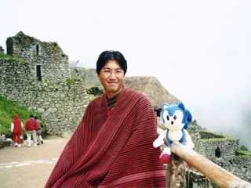

| Sonic Team Goes to South America (1) | |
|
[Sonic Team Goes to South America (2)]
Autumn, 1996. About half a year has passed since the development of NiGHTS ended. The members of Sonic Team were about to begin work on a new project. That work is a completely new version of Sonic.
At the start of the development, the six core members of the team went overseas for research to develop the concept of the software. The destination was Central and South America.
This is the world in which Sonic takes place. It begins on a sunny southern island, followed by a neon-lit casino town and ancient ruins hidden in the jungle.
Plans for the trip were quickly made, and the trip was put into action in November. There were two main destinations. To be continued... (Is it?) |  All together in Tulum |
 Locals at Machu Picchu |
 Taking a nap in Tikal |
 Dinner in Cancun |
We even went to the beach |
 I'm hooked for now |
Going for a ride on a llama |
 We are Sonic Team! |
| SONIC TEAM 1998 | |
<<Return>>